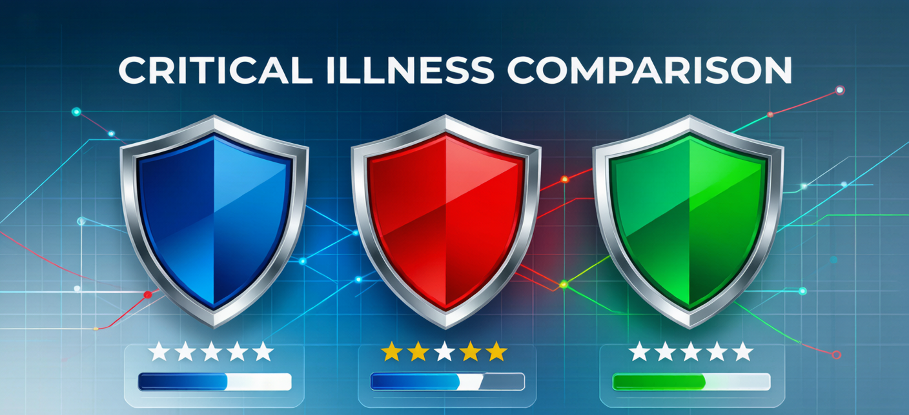
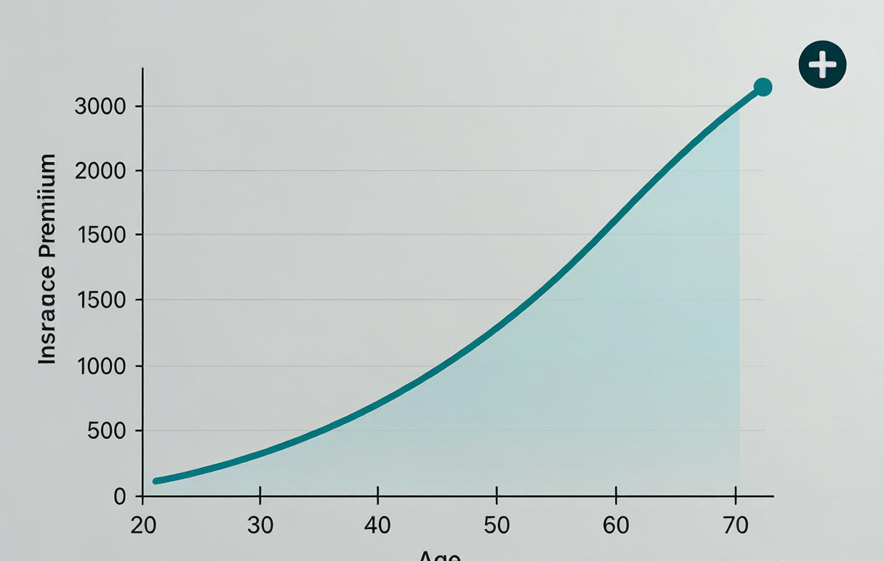
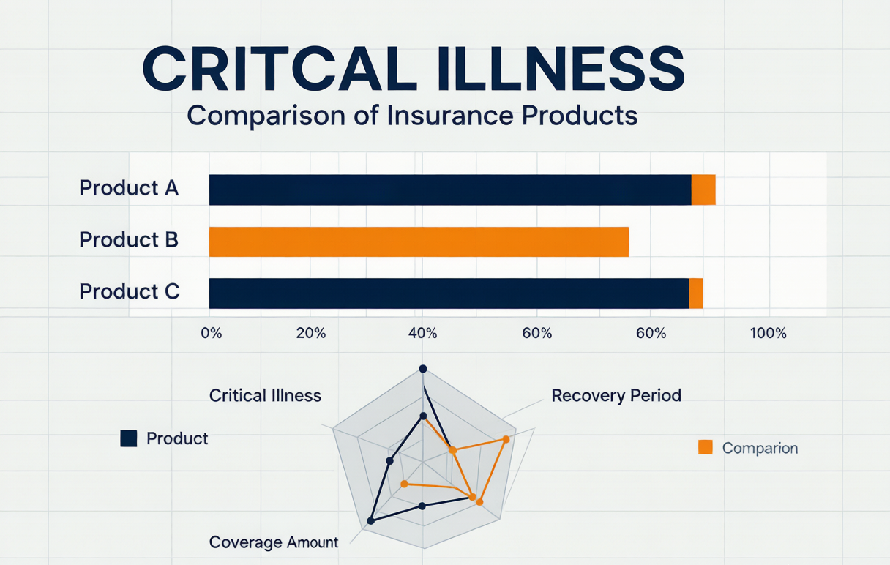

2025年重大疾病保险横向测评：平安、国寿、友邦谁才是真正的性价比之王？
2025年最新重疾险横向测评，深度对比平安福2025、国寿康宁2025、友邦全佑一生三款主流产品，附30岁人群保费对比表和性价比排行，教你选对不选贵。
**摘要：** 2025年重疾险市场硝烟再起，平安、国寿、友邦三大巨头纷纷升级产品。本文用实测数据告诉你——哪款真正值得买，哪款是"广告打得响、性价比平平"的营销品。同时揭露两个重疾险选购中最大的误区，帮你把钱花在刀刃上。

一、为什么2025年一定要买重疾险？——3个不容反驳的理由
理由一：重疾发病率越来越年轻化
据国家癌症中心2024年发布的最新数据，中国重疾确诊中位年龄已降至**42岁**，比10年前提前了整整6岁。35-45岁人群的重疾发病率，比2000年上升了**180%**。
更严峻的是，一旦确诊重疾，治疗费用只是冰山一角——收入中断、康复费用、护理费用，才是真正的"吞金兽"。据中国精算师协会2024年报告，一场重大疾病的平均总经济成本（含治疗+误工+康复）约为**40-80万元**，其中治疗费仅占约40%。
理由二：真实案例——一份重疾险救了一个家庭
**案例：** 刘女士，34岁，深圳某科技公司运营经理，月薪2万。2023年2月体检查出甲状腺结节，进一步确诊为甲状腺癌。幸运的是，她在2020年买了一份50万保额的重疾险。
- 治疗总费用：医保报销后自付约5.8万元
- 半年康复期收入损失：约12万元
- 重疾险理赔：确诊后第8天，50万元到账
刘女士说："这50万让我可以安心养病半年，不用着急回去上班。房贷、车贷、孩子学费，全都没有断。"这就是重疾险的核心价值——**它不是用来付医药费的，是用来买"安心养病的时间"的**。
理由三：年龄越大保费越贵，甚至可能买不了
同样50万保额，不同年龄的保费差异巨大：
| 年龄 | 男性年保费（约） | 女性年保费（约） | 相比25岁涨幅 |
|---|---|---|---|
| 25岁 | ¥4,200 | ¥3,800 | — |
| 30岁 | ¥5,800 | ¥5,200 | +38% |
| 35岁 | ¥8,100 | ¥7,200 | +93% |
| 40岁 | ¥11,500 | ¥9,800 | +174% |
| 45岁 | ¥16,800 | ¥13,500 | +300% |
**每大5岁，保费平均上涨40%-60%。** 更关键的是，45岁以后体检异常率飙升，很多人直接被拒保。2025年买重疾险，不是"要不要"的问题，是"还能不能买"的问题。
二、测评维度说明：我们怎么比的？
本次选取2025年市面上**热度最高、销量最大**的三款重疾险产品：
- **平安福2025**（中国平安）
- **国寿康宁2025**（中国人寿）
- **友邦全佑一生2025**（友邦保险）
| 测评维度 | 权重 | 数据来源 |
|---|---|---|
| 保障范围 | 25% | 银保监会备案条款 |
| 保费性价比 | 25% | 各公司2025年官网公开费率 |
| 理赔服务 | 20% | 2024年各公司理赔年报 |
| 免责条款 | 15% | 合同条款逐条比对 |
| 增值服务 | 15% | 各公司官网服务介绍 |
三、三款主流重疾险详细对比

保障范围对比
| 项目 | 平安福2025 | 国寿康宁2025 | 友邦全佑一生2025 |
|---|---|---|---|
| 重疾种类 | 120种 | 110种 | 115种 |
| 重疾赔付 | 100%保额×1次 | 100%保额×1次 | 100%保额×1次 |
| 中症种类 | 25种 | 20种 | 25种 |
| 中症赔付 | 60%保额×2次 | 50%保额×2次 | 60%保额×2次 |
| 轻症种类 | 40种 | 35种 | 40种 |
| 轻症赔付 | 30%保额×3次 | 25%保额×3次 | 30%保额×3次 |
| 特疾额外赔 | 男3/女3种，+50% | 少儿10种+100% | 男5/女5种，+80% |
| 身故责任 | 赔保额 | 赔保额 | 可选：赔保额/赔保费 |
**分析：** 友邦全佑一生2025的特疾额外赔比例最高（80%），但保费也最高。平安福的中症赔付比例（60%）比国寿康宁（50%）高10个百分点——假设理赔50万保额的中症，平安比国寿多赔**5万元**。
保费对比（30岁，50万保额，20年缴费）
| 性别 | 平安福2025 | 国寿康宁2025 | 友邦全佑一生2025 |
|---|---|---|---|
| 男性 | ¥6,150/年 | ¥5,880/年 | ¥6,480/年 |
| 女性 | ¥5,520/年 | ¥5,180/年 | ¥5,750/年 |
| **20年总保费男** | **¥123,000** | **¥117,600** | **¥129,600** |
国寿康宁比平安福20年省约5,400元，比友邦省约12,000元。但便宜有便宜的道理——等待期长、增值服务少。
等待期和免责条款对比
| 项目 | 平安福2025 | 国寿康宁2025 | 友邦全佑一生2025 |
|---|---|---|---|
| 等待期 | **90天** | 180天 ⚠️ | **90天** |
| 免责条款 | 7条 | 9条 | 7条 |
**等待期差90天意味着什么？** 如果你在第120天确诊重疾，买平安福/友邦能赔，买国寿康宁一分不赔。国寿康宁还多了"遗传性疾病不赔""先天性疾病不赔"两条免责。
理赔服务对比（来源：银保监会2024年理赔年报）
| 公司 | 理赔平均时效 | 获赔率 | 万元以内理赔时效 |
|---|---|---|---|
| 平安 | 1.8天 | 98.7% | 0.5天（秒赔） |
| 国寿 | 2.3天 | 97.9% | 0.8天 |
| 友邦 | 1.5天 | 99.1% | 0.3天 |
友邦理赔最快、获赔率最高；平安数据接近；国寿略慢。但差距在可接受范围——获赔率最低的国寿也有97.9%，意味着**100个理赔申请里约2个被拒**。
增值服务对比
| 服务项目 | 平安福 | 国寿康宁 | 友邦全佑 |
|---|---|---|---|
| 绿色就医通道 | ✅ | ✅ | ✅（更优质） |
| 二次诊疗意见 | ✅ | ❌ | ✅ |
| 住院垫付 | ✅ | ❌ | ✅ |
| 特药报销 | 120种 | 80种 | 150种 |
| 海外就医 | ✅ | ❌ | ✅ |
四、性价比排行：不同预算的最佳选择
预算5000元/年以下 → 国寿康宁2025
- ✅ 保费最低，国有大品牌
- ⚠️ 等待期180天，增值服务基础
- **适合人群：** 预算有限的工薪族
预算5000-10000元/年 → 平安福2025
- ✅ 品牌知名度最高，网点最广
- ✅ 轻症/中症赔付比例高（60%中症赔付）
- ✅ 绿色就医覆盖全国300+城市
- **适合人群：** 中产家庭，求品牌+服务均衡
预算10000元/年以上 → 友邦全佑一生2025
- ✅ 理赔服务最好，获赔率99.1%
- ✅ 特疾额外赔80%，全面增值服务
- ✅ 等待期仅90天
- **适合人群：** 预算充足、重视服务品质的高净值人群
五、投保必知：两个最致命的误区

误区一：只看重疾种类数量
银保监会规定的**28种高发重疾**占所有重疾理赔的**95%以上**。多出来的几十种罕见病，一辈子可能都碰不到。真正该关注的是：轻症/中症的赔付比例（是否≥30%保额）、是否包含**高发轻症**（轻微脑中风、不典型心肌梗塞、冠状动脉介入术）。
反面教材：有消费者花高价买了一份"150种重疾"的产品，结果确诊冠心病做了支架手术（属于高发轻症），但条款要求"开胸手术"才能赔——支架介入不算，直接被拒赔。
误区二：体检异常后才想起来买保险
体检出结节、脂肪肝、高血压后再想买保险，大概率面临三种结果：**加费承保（涨保费）、除外承保（有关疾病不赔）、或直接拒保**。
正确做法：**趁身体健康、体检报告干净的时候买！** 这是买保险的黄金原则，价值超过一切比价和省钱技巧。
常见问题 FAQ
**Q：重疾险和医疗险有什么区别？买了重疾险还需要买医疗险吗？**
A：重疾险是"确诊即赔"，赔的钱随心用；医疗险是"实报实销"，用来付医院账单。两者不仅不冲突，反而是**最佳搭档**——医疗险报销治疗费，重疾险补偿收入损失。以刘女士的真实案例为例：5.8万医疗费走百万医疗报销，50万重疾理赔用来养家和康复。如果只有其中之一，家庭的财务压力会大得多。预算有限的话，先买百万医疗险（年交300元左右），再逐步配重疾险。
**Q：重疾险买定期还是终身？**
A：本质是"预算规划"问题，而非"哪个更好"。预算充足（年交8000+）→买终身，一劳永逸；预算有限→先买定期（保到70岁），保额优先原则。**先有保额，再谈期限**——50万定期比20万终身更有价值。以后收入提高了再加保终身产品。
**Q：网上买保险靠谱吗？理赔会不会更难？**
A：完全靠谱——网销保险和线下保险的法律效力完全相同。网销保险通常更便宜（省去了代理人佣金约10%-30%），理赔按合同条款执行，不管你是网上买还是线下买。理赔时打保险公司客服电话或通过APP自助申请，流程和线下完全一致。网上买保险唯一的风险是：你自己看条款不够仔细，买错了产品——而在线下，代理人会帮你解释（虽然也可能误导你）。
*本文数据来源于各保险公司公开条款及银保监会2024年理赔年报，保费测算结果仅供参考，实际以保险公司核保结果为准。投保前请仔细阅读保险条款，特别是免责条款和等待期规定。*
*如有保险相关问题，欢迎在评论区留言。*